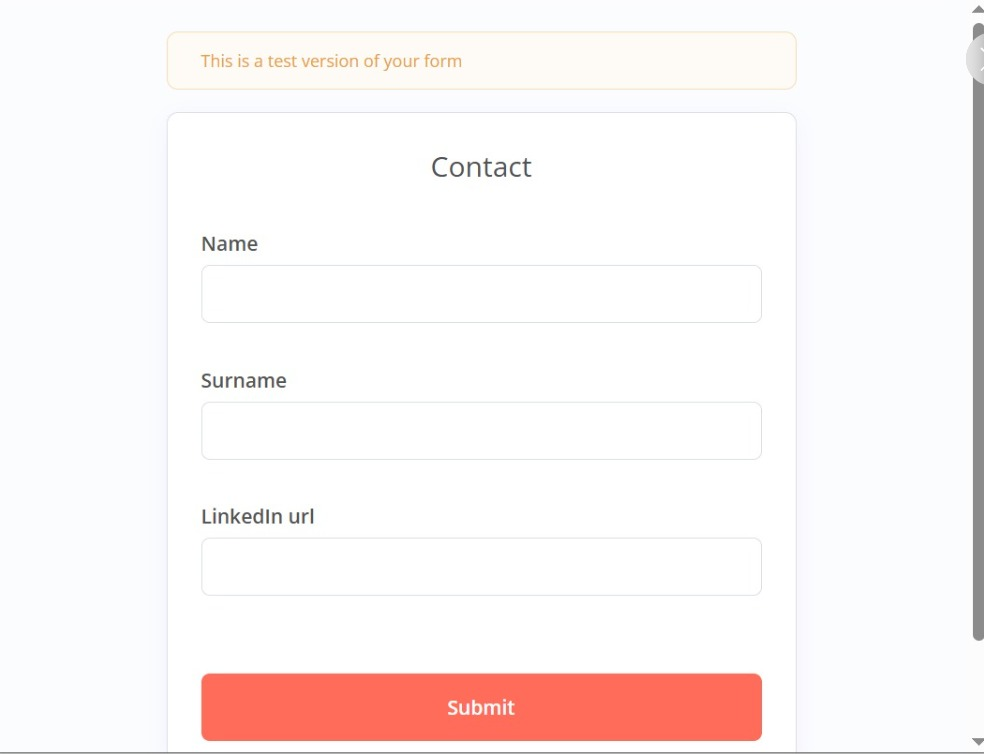
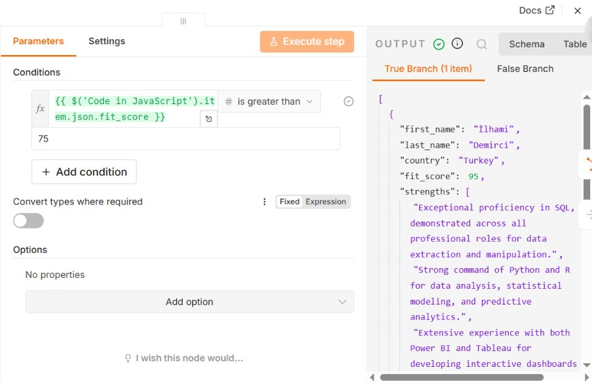
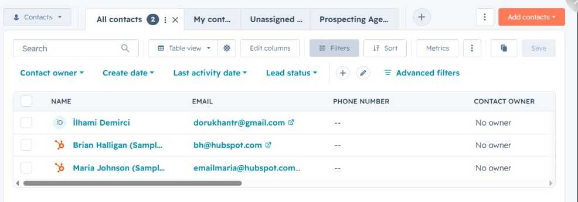
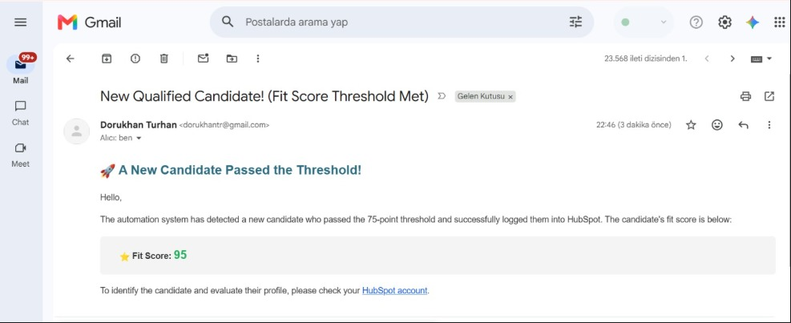

Built an automated n8n pipeline for AI-driven candidate screening. Triggered by a form, the system scrapes LinkedIn profiles via Apify. Google Gemini API acts as a recruiter, analyzing the profile against job requirements and returning a JSON fit score. Custom JavaScript parses the data. Candidates scoring >75 are automatically synced to HubSpot CRM and trigger an email alert, eliminating manual review.
n8n Automation Workflow Architecture
This image displays the complete end-to-end architecture of the automated LinkedIn candidate screening pipeline built on n8n. The process begins with an "On form submission" trigger. It then utilizes Apify to scrape the submitted LinkedIn profile data. This extracted data is analyzed by Gemini AI via an HTTP Request, and the results are parsed into a structured JSON format using a custom JavaScript node. An "If" node evaluates the candidate's AI-generated fit score. If the candidate passes the defined threshold (e.g., >75), they are automatically created or updated in HubSpot CRM, and an instant email notification is sent via Gmail. If the candidate fails to meet the threshold, the workflow routes to a "No Operation" node and gracefully terminates without creating a CRM record. This core pipeline completely eliminates the need for manual resume screening.
Workflow Trigger Form
This simple custom form acts as the entry point for the automation. Submitting a candidate's Name, Surname, and LinkedIn URL instantly triggers the n8n pipeline to start the profile scraping and AI evaluation process.

Conditional Logic & AI JSON Output
This screenshot highlights the workflow's decision-making stage using an "If" node. It evaluates whether the parsed fit_score is strictly greater than the 75-point threshold. The right panel reveals the structured JSON response successfully generated by the Gemini AI, which extracted the candidate's details, assigned a high score of 95, and detailed specific technical strengths. Because the score exceeds the requirement, the data successfully passes through the "True Branch" to trigger the CRM sync and email alert.

Automated HubSpot CRM Sync
This screenshot demonstrates the successful endpoint of the automation pipeline. The qualified candidate who passed the AI evaluation threshold has been automatically imported into the HubSpot Contacts database. The n8n workflow seamlessly maps the parsed candidate data (such as name and email) directly into the CRM, providing recruiters with a clean, ready-to-action profile without any manual data entry.

Automated Email Notification
This image showcases the final step of the workflow: an instant email alert triggered by the n8n Gmail node. Once a candidate passes the AI evaluation, the system automatically sends this formatted HTML email to the recruiter. It prominently highlights the dynamic "Fit Score" extracted from the Gemini AI analysis and provides a direct prompt to review the newly created profile in the HubSpot CRM. This ensures stakeholders are immediately notified of top-tier talent without needing to manually monitor incoming applications.
